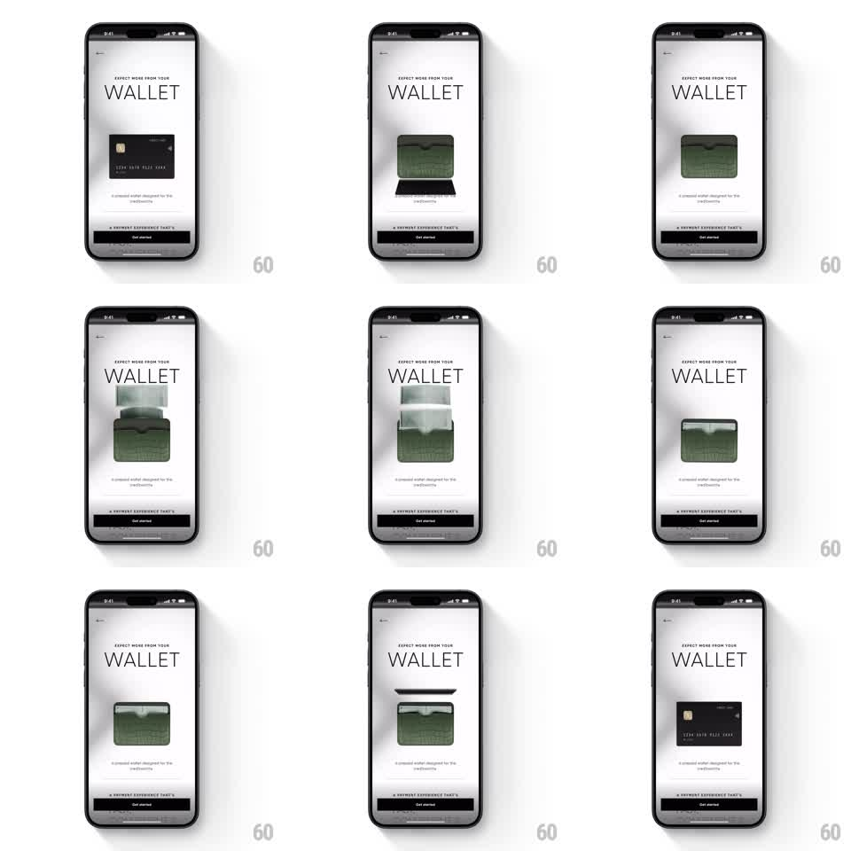

Media
Frame-by-frame

Rebuild this animation 1:1: CRED's wallet card reveal - on the WALLET screen, the leather wallet opens and a black credit card slides out, rises, and spins in 3D as it settles into view.

Rebuild this animation 1:1: CRED's wallet card reveal - on the WALLET screen, the leather wallet opens and a black credit card slides out, rises, and spins in 3D as it settles into view. ## Integration Integration: stack-agnostic spec - springs given as stiffness/damping, timed motions as duration + curve; map every value to your framework and animation library of choice. ## Scene CRED's minimal white screen: "EXPECT MORE FROM YOUR WALLET" serif headline, a dark "Get started" button pinned at the bottom. Center stage: a green croc-embossed leather wallet. The wallet's top flap opens and a black metal credit card slides upward out of it, clears the wallet, and rotates in 3D as it presents itself, settling face-up above the wallet. ## Motion spec Pattern: card draw and 3D spin, ~2.5s total. - The wallet scales in first (spring stiffness 300 damping 22). - The flap opens (rotate around its hinge, 300ms, ease-out) and the card slides up out of the wallet slot (500ms, ease-out), a soft shadow growing beneath it. - Once clear, the card rotates: a slow 3D turn around its vertical axis (700ms, ease-in-out) with real perspective - edges foreshorten, the chip and sheen catch light as it turns. - The card settles level and hovers (gentle 4px bob, 2.5s period) while the wallet closes beneath it (250ms). - Loop: the card slides back in and the sequence can replay. ## Calibration - Materials carry it: croc texture on the wallet, brushed dark finish on the card with a moving specular highlight during the spin. - The card never intersects the wallet geometry - it fully clears before rotating. ## Reduced motion Card fades in above the wallet. ## Don't miss - The headline and button never move - all motion is the wallet and card. - The spin shows the card's face at the start and end, reading as a presentation, not a flip to a back side.